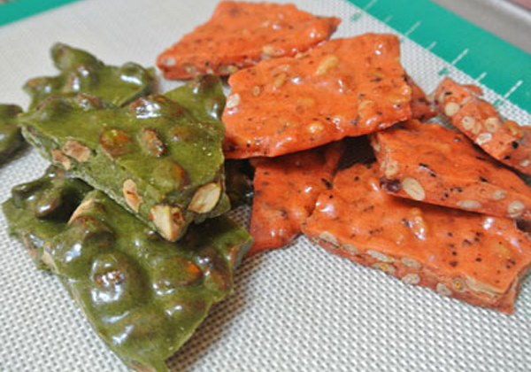
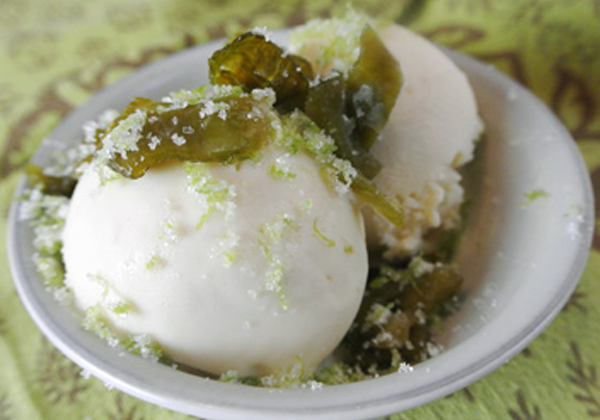

HATCH CHILE CANDIES
GREEN/RED CHILE PEANUT BRITTLE
$8.00/lb - MADE TO ORDER

Crunchy, sweet and so delicious! You'll go nuts over our chile peanut, piñon, and pecan bueno brittles. Try every variety — we know you'll love them! All of our brittles are packed in authentic New Mexico Artist tins!
GREEN/RED CHILE CHOCOLATE CHIP COOKIES
$12.00/dozen - MADE TO ORDER
The texture is perfect: dense, chewy, and gooey with melted chocolate. And just as you’re sinking into a buttery, sweet cookie reverie, the Hatch chile’s soft vegetal notes hit you, followed by a smidge of peppery heat, and then it’s all gone ‘til the next bite.
GREEN/RED CHILE ICE CREAM
$20.00/gallon - MADE TO ORDER

If you're looking for somthing different and exciting, then try our Hatch Green Chile ice cream. This sweet and slightly spicy treat will cool off the summer heat while awakening your senses to the delicious, one of a kind taste of New Mexico's green chile.